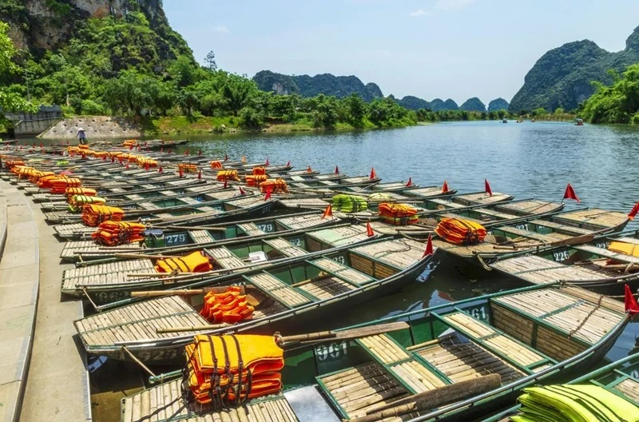
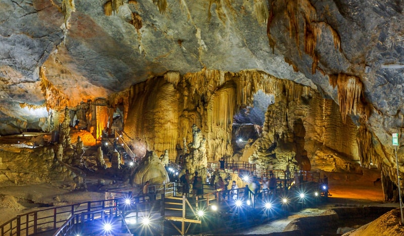
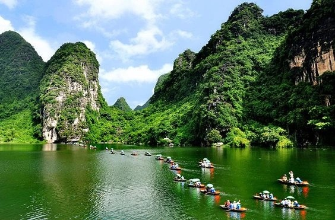
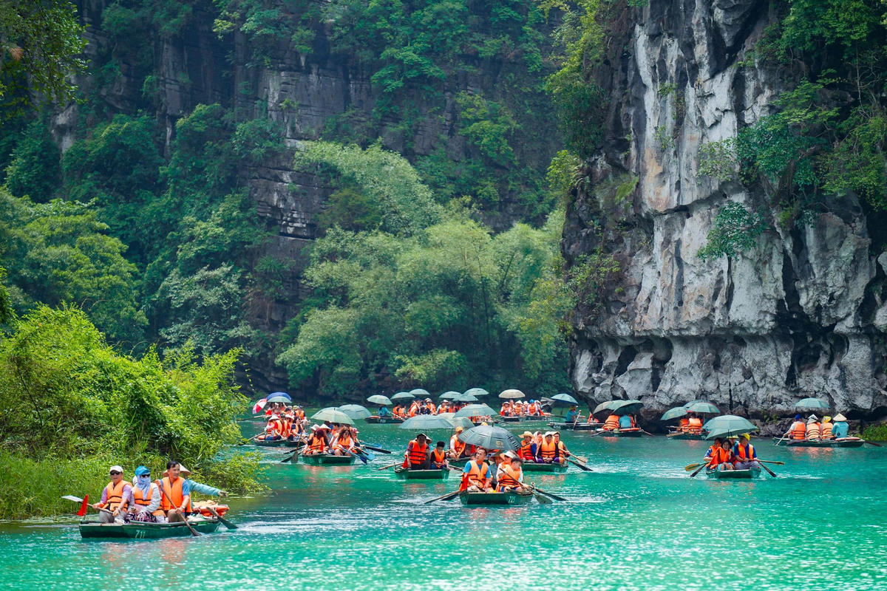
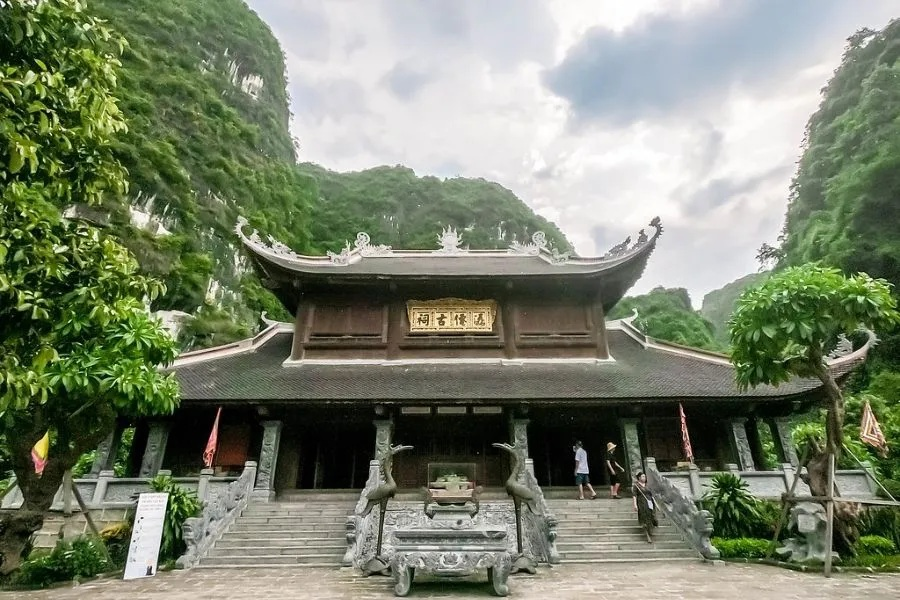

Giới Thiệu Tour
Tràng An là điểm đến nổi bật của Ninh Bình, được ví như “vịnh Hạ Long trên cạn” với núi đá vôi, hang động tự nhiên, dòng sông xanh trong và khung cảnh yên bình.
Tour Tràng An Di Sản đưa du khách trải nghiệm ngồi thuyền qua hang động, ngắm núi non hùng vĩ, tham quan các điểm tâm linh và khám phá vẻ đẹp cổ kính của vùng đất cố đô.
Điểm Nổi Bật

Bến Thuyền Tràng An
Khởi đầu hành trình bằng khung cảnh sông nước trong xanh và núi đá bao quanh.

Hang Động Kỳ Bí
Trải nghiệm đi thuyền xuyên qua những hang đá tự nhiên độc đáo.

Núi Đá Vôi Hùng Vĩ
Chiêm ngưỡng cảnh quan núi non trùng điệp, xanh mát và yên bình.

Dòng Sông Xanh Ngọc
Tận hưởng không gian trong lành, mặt nước êm đềm và phong cảnh thơ mộng.

Đền Trình
Điểm dừng chân tâm linh nổi bật trong hành trình khám phá Tràng An.
Chùa Bái Đính
Quần thể chùa rộng lớn, nổi tiếng với kiến trúc uy nghi và không gian thanh tịnh.
Lịch Trình Chi Tiết
Tour 1 Ngày — Khám Phá Tràng An
06:30 — Xe và hướng dẫn viên đón khách tại điểm hẹn.
09:30 — Đến khu du lịch Tràng An, nghỉ ngơi và chuẩn bị xuống thuyền.
10:00 — Ngồi thuyền khám phá hang động và núi đá vôi.
12:30 — Ăn trưa đặc sản Ninh Bình như cơm cháy, dê núi.
14:00 — Tham quan chùa Bái Đính và không gian tâm linh nổi tiếng.
16:30 — Khởi hành về lại điểm đón.
19:00 — Kết thúc tour, hẹn gặp lại quý khách.
Bảng Giá Tour
| Đối Tượng | Giá / Người | Ghi Chú |
|---|---|---|
| Người lớn | 850.000 ₫ | Bao gồm xe đưa đón, vé tham quan, thuyền và bữa trưa. |
| Trẻ em 5–11 tuổi | 600.000 ₫ | Có ghế ngồi riêng, suất ăn và vé tham quan theo quy định. |
| Trẻ em dưới 5 tuổi | Miễn phí | Ngồi cùng người lớn, chi phí phát sinh tự túc. |
Giá đã gồm: xe du lịch, vé tham quan Tràng An, vé thuyền, bữa trưa, nước uống, hướng dẫn viên và bảo hiểm du lịch cơ bản.
Đánh Giá Khách Hàng
4.9 / 5 ★★★★★
96 đánh giá từ khách đã tham gia tour.
Nguyễn Đức Huy
Lịch trình vừa đủ, không quá mệt. Bữa trưa ngon, hướng dẫn viên nhiệt tình và hỗ trợ khách rất tốt.
Hoàng Minh Anh
Cảnh Tràng An rất đẹp, nước trong và không khí dễ chịu. Ngồi thuyền qua hang động là trải nghiệm rất đáng nhớ.